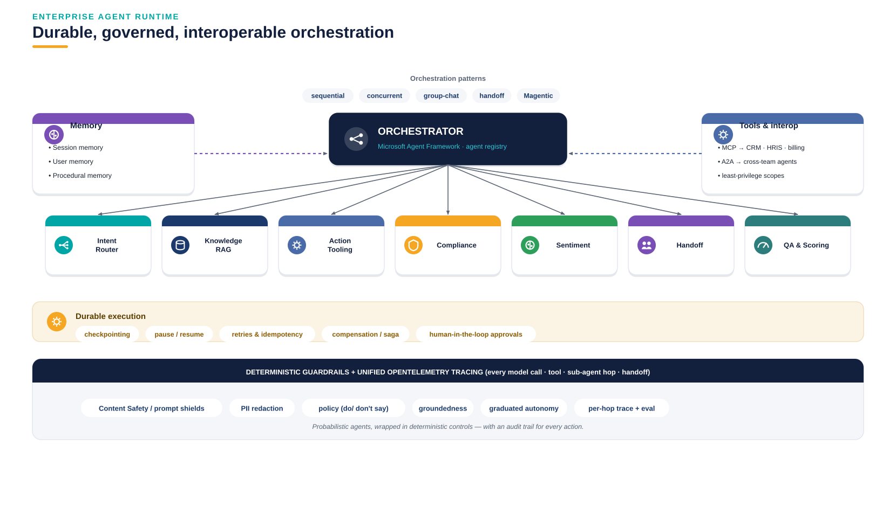
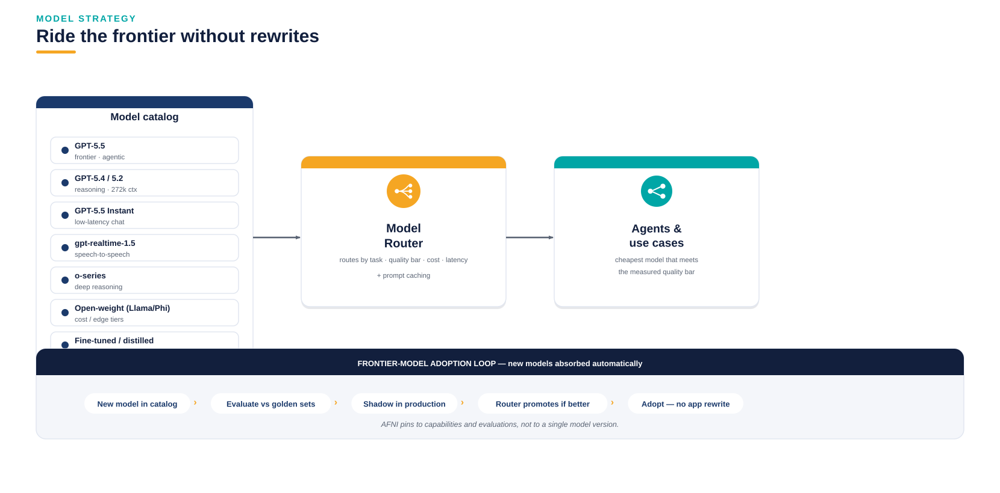

PLATFORM
Layered architecture on Microsoft Foundry
Foundry Agent Service (durable hosted agents), the Model Router, unified OpenTelemetry tracing & evaluation, MCP tools and A2A interop — with an API Management AI gateway for metering, quotas and caching.


Enterprise agent runtime — durable, governed, interoperable.

Model strategy — ride the frontier without rewrites.